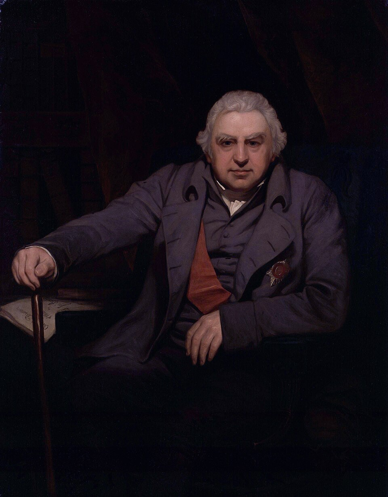

Joseph Banks


Joseph Banks (1743–1820) was the naturalist of James Cook's first voyage in the Endeavour (1768–1771), which brought him to Botany Bay in 1770. President of the Royal Society from 1778 until his death, he became the great patron of British science and one of the promoters of the colony of New South Wales.
It was Banks who championed at the Admiralty Flinders's plan to complete the survey of the Australian coast. He chose the Investigator's scientific staff — the botanist Robert Brown, the natural history painter Ferdinand Bauer, the landscape artist William Westall, the gardener Peter Good — and saw to their instruments and instructions.
Flinders honoured him by naming the Sir Joseph Banks Group in Spencer Gulf. Banks was also a great Lincolnshire landowner: Reevesby Island recalls his estate at Revesby Abbey, not far from Flinders's native village.